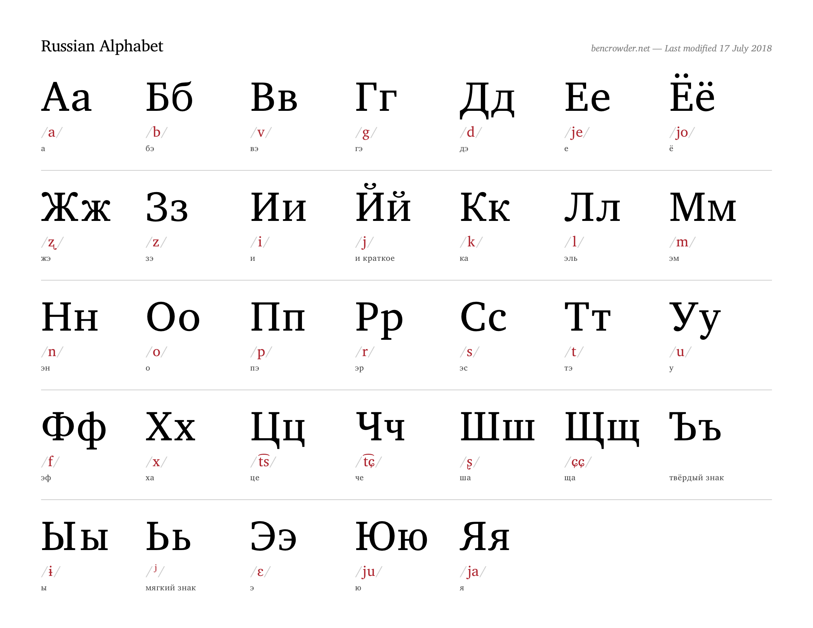
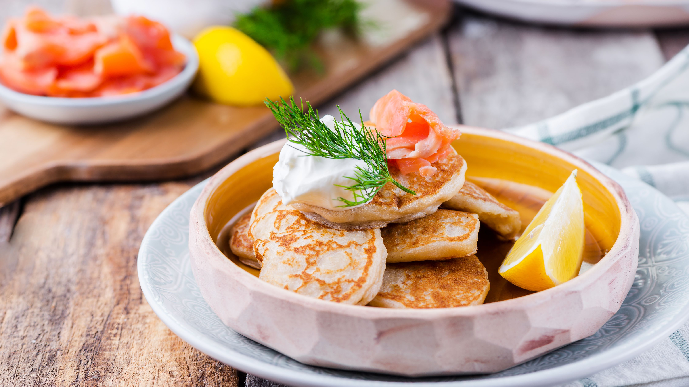
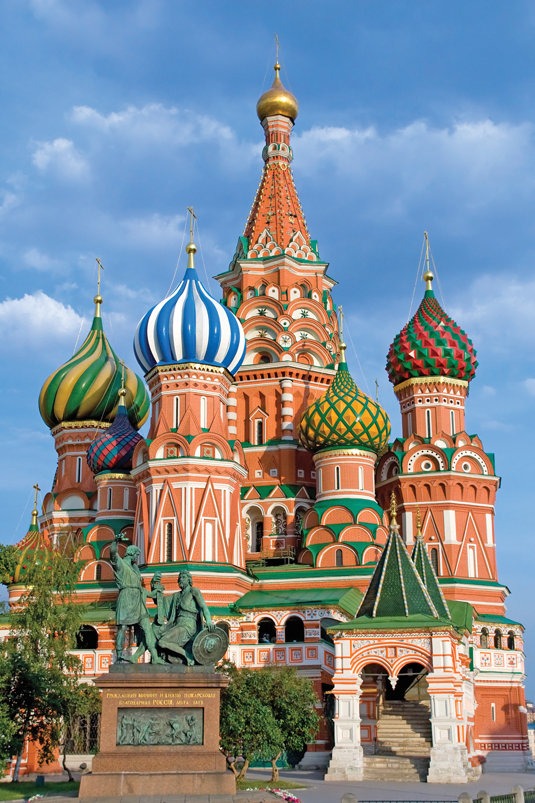

Russian Language
Russian (Russian: русский язык, romanized: russkiy yazyk) is an East Slavic language mainly spoken across Russia. It is the native language of the Russians, and belongs to the Indo-European language family. It is one of four living East Slavic languages, and is also a part of the larger Balto-Slavic languages. Besides Russia itself, Russian is an official language in Belarus, Kazakhstan, and Kyrgyzstan, and is used widely as a lingua franca throughout the Caucasus, Central Asia, and to some extent in the Baltic states. It was the de facto language of the former Soviet Union, and continues to be used in public life with varying proficiency in all of the post-Soviet states.
Russian has over 258 million total speakers worldwide. It is the most spoken Slavic language, and the most spoken native language in Europe, as well as the most geographically widespread language of Eurasia. It is the world's seventh-most spoken language by number of native speakers, and the world's eighth-most spoken language by total number of speakers. Russian is one of two official languages aboard the International Space Station, as well as one of the six official languages of the United Nations.
The Cyrillic Alphabet
Russian Cuisine
The national Russian cuisine has evolved in a multicultural and multiethnic state, with strong mutual influence from the cuisines of other ethnic groups that live within the nation's borders or had been a part of the Russian state historically. Despite such deep mutual influence, many national cuisines within the borders of the Russian Federation maintain their uniqueness, and thus have their own separate articles dedicated to them, such as Tatar cuisine, Sakha cuisine, or Yamal cuisine.
"Blini" is a very popular dish in Russia. In the West, the term blini traditionally refers to small (2-4 inches in diameter) savory pancakes made with leavened batter. In modern Russian, the term most often refers to pan-sized leavened thin pancakes, although smaller leavened pancakes are also called blini and were much more common historically.
Blini
Russian Tourism
Most popular tourist destinations in Russia are Moscow and Saint Petersburg, the current and the former capitals of the country and great cultural centers, recognized as World Cities. Moscow and Saint Petersburg feature such world-renowned museums as Tretyakov Gallery and Hermitage, famous theaters like Bolshoi and Mariinsky, ornate churches like Saint Basil's Cathedral, Cathedral of Christ the Saviour, Saint Isaac's Cathedral and Church of the Savior on Blood, impressive fortifications like Moscow Kremlin and Peter and Paul Fortress, beautiful squares like Red Square and Palace Square, and streets like Tverskaya and Nevsky Prospect. Rich palaces and parks of extreme beauty are found in the former imperial residences in suburbs of Moscow (Kolomenskoye, Tsaritsyno) and Saint Petersburg (Peterhof, Strelna, Oranienbaum, Gatchina, Pavlovsk Palace, Tsarskoye Selo). Moscow contains a great variety of impressive Soviet-era buildings along with modern skyscrapers, while Saint Petersburg, nicknamed Venice of the North, boasts of its classical architecture, many rivers, channels and bridges.
Kazan, the capital of Tatarstan, shows a unique mix of Christian Russian and Muslim Tatar cultures. The city has registered a brand The Third Capital of Russia, though a number of other major Russian cities compete for this status, like Novosibirsk, Yekaterinburg and Nizhny Novgorod, all being major cultural centers with rich history and prominent architecture. Veliky Novgorod, Pskov and the cities of Golden Ring (Vladimir, Yaroslavl, Kostroma and others) have at best preserved the architecture and the spirit of ancient and medieval Rus', and also are among the main tourist destinations. Many old fortifications (typically Kremlins), monasteries and churches are scattered throughout Russia, forming its unique cultural landscape both in big cities and in remote areas.
The Red Square